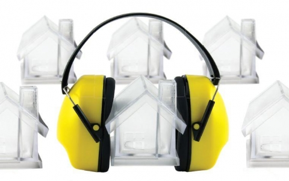
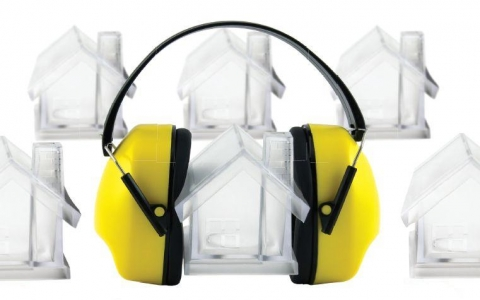

9 советов, как поддерживать порядок в доме | homify
2020.10.11 01:02

Error: Cannot find module './CookieBanner' at eval (webpack:///./app/assets/javascripts/webpack/react-components_lazy_^\.\/.*$_namespace_object?:3644:12) at at process._tickCallback (internal/process/next_tick.js:189:7) at Function.Module.runMain (module.js:696:11) at startup (bootstrap_node.js:204:16) at bootstrap_node.js:625:3
Your browser is out-of-date.
To get a better experience with our home designs, please download other browsers for free. Just click on the icon!
Rooms Professionals Magazine Become a Professional Premium Free Consultation Sign out Log in Become a Professional Log in Messages See all Notifications Mark all as read See all
9 советов, как поддерживать порядок в доме
Ksenia Zayarnyuk 24 March, 2017 12:00 Created: 14 March, 2017 Loading admin actions …Возможно, вы не раз удивлялись, как в некоторых домах всегда царствуют порядок и чистота. Вы думаете, что для этого нужно много времени, но это не всегда так. Просто нужно упорство и выполнение рутинных действий, которые помогут поддерживать порядок. Сегодня советы о том, что нужно делать каждый день перед сном. Вы заметите невероятное изменение в вашей жизни и в вашем доме .
1. Оставьте кухню в чистоте
ID SaveRafaela Fraga Brás Design de Interiores & Homestyling Rafaela Fraga Brás Design de Interiores & Homestyling
Не ложитесь спать, пока не помоете посуду и не почистите столешницы. Грязный вид кухни с утра портит настроение и желание поддерживать чистоту. Это тот минимум, который поможет вам поддерживать порядок.
2. Гостиная
ID SaveArkstudio Arkstudio
Гостиная чаще всего находится на виду. Перед сном поправьте диванные подушки, разложите книги, приберите на столике. Это создаст аккуратный внешний вид.
3. Подготовьте вещи на следующий день
ID SaveACACIA ACACIA
Этот совет имеет важное значение, чтобы избежать путаницы и хаоса утром, особенно для семей с детьми. Посвятите несколько минут каждый вечер, чтобы приготовить бутерброды, собрать сумку, рюкзаки детям. С утра это хорошо экономит время.
4. Игрушки
ID Savehomify homify
Перед сном соберите игрушки, пройдитесь по квартире, так как они могут оказаться в самых неожиданных местах. Приучайте и приобщайте к этому ребенка.
5. Уборка в кабинете
ID SaveBoConcept Germany GmbH BoConcept Germany GmbH
Если у вас есть рабочий стол, свой кабинет, наведите там порядок, соберите бумаги, очистите поверхность, выключите компьютер.
6. Приготовьте одежду
ID SaveCasa de Valentina Casa de Valentina
Перед тем как лечь в постель, подготовьте свой комплект одежды на завтра. Научите этому и детей. Смотрите, чтобы не оставалось разбросанных вещей, сразу вешайте их на место.
Need help with your home project?
Get in touch!
7. Грязные вещи
ID SaveMobel Oak Laundry Bin
Asia Dragon Furniture from London Asia Dragon Furniture from LondonНе оставляйте грязную одежду в шкафу, на предметах мебели. Заведите специальные корзины и складывайте ее туда. Это поможет сохранить порядок в доме .
8. Список задач
ID SaveCorridor
Polygon arch&des Polygon arch&desСоставьте список задач, которые нужно сделать на следующий день, это позволит не терять времени, распланировать день и ни о чем не забыть.
9. Еще об одежде
ID Savehomify homify
Придя после работы, учебы, не складывайте одежду на видном месте. Повесьте ее на вешалку, сделайте отдельное место в шкафу для тех вещей, которые вы наденете еще раз.
Здесь можно выбрать клининговую компанию.
Open in a new tab Embed this photo on my site Need help with your home project?
Get in touch!
Discover home inspiration!
Houses
Living room
Kitchen
Bedroom
Garden
Bathroom
Dining room
Pool
Add SEO element Help & Support Sign up company for free Go Premium Terms & Conditions Privacy Policy Imprint Badges Topics Jobs Get a better experience!homify International
DEUTSCHLAND UNITED KINGDOM ESPAÑA FRANCE ITALIA PORTUGAL BRASIL MÉXICO INDIA HONG KONG SINGAPORE 日本 한국 NEDERLAND TÜRKIYE POLSKA РОССИЯ ARGENTINA VENEZUELA COLOMBIA SOUTH AFRICA MALAYSIA الإمارات العربية المتحدة مصر PERÚ CHILE THAILAND INDONESIA PAKISTAN PHILIPPINES TAIWAN VIETNAM CANADA مملكةُ العربيةِ السعوديةِ УКРАЇНА UNITED STATES OF AMERICAhomify - modify your home
4.5Browse through millions of photos with the homify app!
DOWNLOAD THE APP FOR FREE No, Thanks- Как сохранить порядок в доме.
- Как сохранить порядок в доме наведение порядка в квартире ...
- 9 советов, как поддерживать порядок в доме | homify | homify
- 5 методов Как сохранить порядок в доме - 100500metod
- порядок в доме? да ну, что вы... у меня трое детей... А ...
- Как навести порядок в доме за 28 дней: strana_flymamia ...
- Порядок в доме и в голове | karpachoff.com
- Как раз и навсегда навести порядок в доме
- Шикарные идеи как сохранить порядок в доме » 1000prikolov ...
- Как провести уборку в квартире, доме: периодичность и ...
- Как сохранить порядок в доме.
Возможно, вы не раз удивлялись, как в некоторых домах всегда царствуют порядок и чистота. Вы думаете, что для этого нужно много времени, но это не всегда так. Просто нужно упорство и выполнение рутинных действий ...
- Как сохранить порядок в доме наведение порядка в квартире ...
Уборка в доме – это не всегда приятное занятие, однако проводить ее необходимо. Как правильно подойти к этому вопросу и обеспечить максимальную чистоту в жилом
- 9 советов, как поддерживать порядок в доме | homify | homify
Все о том, как отключить газ в квартире для тех, кто хочет перейти с газа на электричество или отказаться от газа по другим причинам. Преимущества и недостатки такого решения, порядок действий, документы, возможнфе ...
- 5 методов Как сохранить порядок в доме - 100500metod
Как сохранить порядок в доме. Проблема сохранения уюта и порядка в доме волнует многих женщин. Так сложно в повседневной суете найти время для уборки и разгребания накопившихся завалов.
- порядок в доме? да ну, что вы... у меня трое детей... А ...
Скоро весна! Значит пора вздохнуть поглубже. Чувствуете, что нечем дышать? ПЫЛЬ!!! Итак генеральная уборка ужасает своими масштабами...сразу опускается одна рука, потом вторая.... И глаза хочется закрыть, чтоб не видеть ...
- Как навести порядок в доме за 28 дней: strana_flymamia ...
Как создать такую атмосферу в доме, чтобы каждый член семьи чувствовал себя в нём хозяином, заботился о чистоте и уюте и поддерживал порядок. Вот тут у меня затык.
- Порядок в доме и в голове | karpachoff.com
Как сохранить порядок в доме Работа, готовка, стирка, глажка, уроки с детьми – это далеко не все, чем занимается женщина в течение одного дня.
- Как раз и навсегда навести порядок в доме
Навести порядок в доме проще, чем поддерживать в нем порядок. Вот несколько правил, которые помогут в этом: Первое правило Нужно сортировать и избавляться от ненужного!
- Шикарные идеи как сохранить порядок в доме » 1000prikolov ...
Как похудеть в домашних условиях(без рекл 5 методов Как сохранить порядок в доме 5 лучших методов борьбы с похмельем УТОПЛЕНИЕ: ВИДЫ, ПРИЗНАКИ ,Первая помощь.
- Как провести уборку в квартире, доме: периодичность и ...
Шикарные идеи как сохранить порядок в доме. Дома у каждой девушки, как вы знаете, полным-полно всяких мелочей. И все кисточки, сережечки, резиночки, карандашики непременно необходимо для ...
Возможно, вы не раз удивлялись, как в некоторых домах всегда царствуют порядок и чистота. Вы думаете, что для этого нужно много времени, но это не всегда так. Просто нужно упорство и выполнение рутинных действий ...
Уборка в доме – это не всегда приятное занятие, однако проводить ее необходимо. Как правильно подойти к этому вопросу и обеспечить максимальную чистоту в жилом
Все о том, как отключить газ в квартире для тех, кто хочет перейти с газа на электричество или отказаться от газа по другим причинам. Преимущества и недостатки такого решения, порядок действий, документы, возможнфе ...
Как сохранить порядок в доме. Проблема сохранения уюта и порядка в доме волнует многих женщин. Так сложно в повседневной суете найти время для уборки и разгребания накопившихся завалов.
Скоро весна! Значит пора вздохнуть поглубже. Чувствуете, что нечем дышать? ПЫЛЬ!!! Итак генеральная уборка ужасает своими масштабами...сразу опускается одна рука, потом вторая.... И глаза хочется закрыть, чтоб не видеть ...
Как создать такую атмосферу в доме, чтобы каждый член семьи чувствовал себя в нём хозяином, заботился о чистоте и уюте и поддерживал порядок. Вот тут у меня затык.
Как сохранить порядок в доме Работа, готовка, стирка, глажка, уроки с детьми – это далеко не все, чем занимается женщина в течение одного дня.
Навести порядок в доме проще, чем поддерживать в нем порядок. Вот несколько правил, которые помогут в этом: Первое правило Нужно сортировать и избавляться от ненужного!
Как похудеть в домашних условиях(без рекл 5 методов Как сохранить порядок в доме 5 лучших методов борьбы с похмельем УТОПЛЕНИЕ: ВИДЫ, ПРИЗНАКИ ,Первая помощь.
Шикарные идеи как сохранить порядок в доме. Дома у каждой девушки, как вы знаете, полным-полно всяких мелочей. И все кисточки, сережечки, резиночки, карандашики непременно необходимо для ...

 
